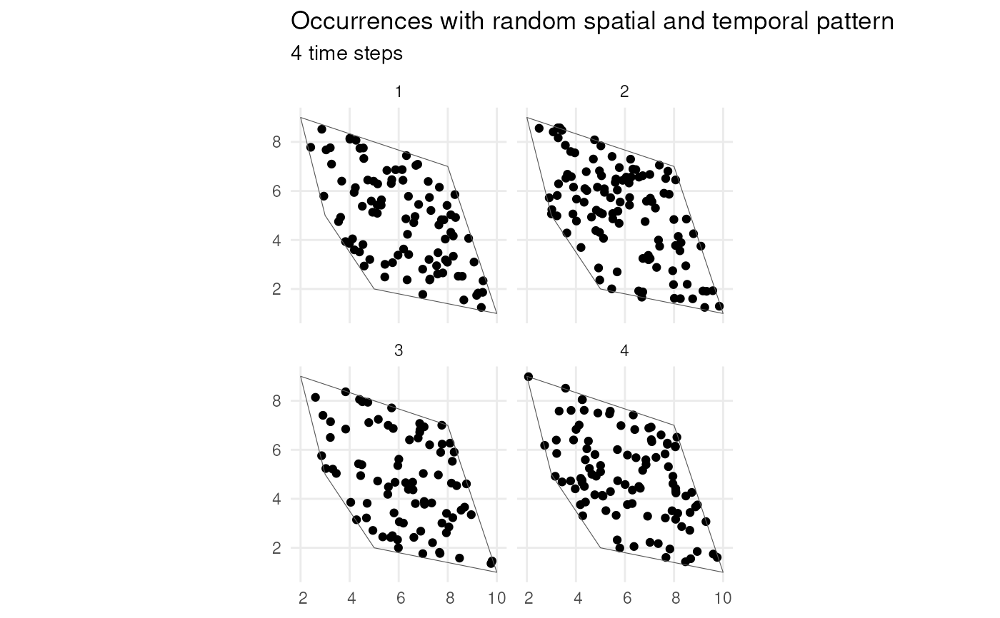
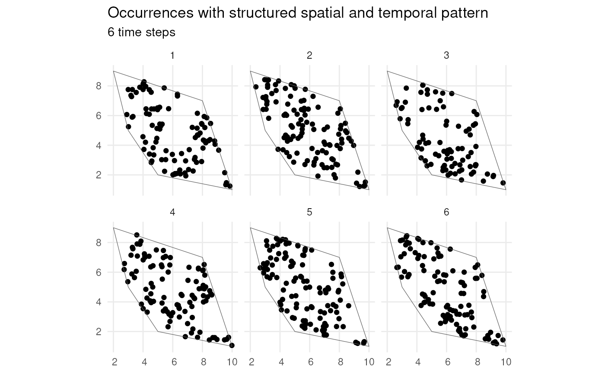

Simulate species occurrences within a spatiotemporal scope
Source:R/simulate_occurrences.R
simulate_occurrences.RdThis function simulates occurrences of a species within a specified spatial and/or temporal extent.
Usage
simulate_occurrences(
species_range,
initial_average_occurrences = 50,
spatial_pattern = c("random", "clustered"),
n_time_points = 1,
temporal_function = NA,
...,
seed = NA
)Arguments
- species_range
An sf object with POLYGON geometry indicating the spatial extent to simulate occurrences.
- initial_average_occurrences
A positive numeric value indicating the average number of occurrences to be simulated within the extent of
species_rangeat the first time point. This value serves as the mean (lambda) of a Poisson distribution.- spatial_pattern
Specifies the spatial pattern of occurrences. It can be a character string (
"random"or"clustered") or a numeric value ≥ 1 (1 means random distribution, larger values indicate more clustering). The default is"random"."clustered"corresponds to a value of 10. Seecreate_spatial_pattern().- n_time_points
A positive integer specifying the number of time points to simulate.
- temporal_function
A function generating a trend in number of occurrences over time, or
NA(default). Ifn_time_points> 1 and a function is provided, it defines the temporal pattern of number of occurrences.- ...
Additional arguments to be passed to
temporal_function.- seed
A positive numeric value setting the seed for random number generation to ensure reproducibility. If
NA(default), thenset.seed()is not called at all. If notNA, then the random number generator state is reset (to the state before calling this function) upon exiting this function.
Value
An sf object with POINT geometry containing the locations of the
simulated occurrences, a time_point column indicating the associated
time point for each occurrence and a sampling_p1 column indicating the
sampling probability associated with the spatial pattern (see
create_spatial_pattern()).
Examples
# Load packages
library(sf)
library(ggplot2)
# Create polygon
plgn <- st_polygon(list(cbind(c(5, 10, 8, 2, 3, 5), c(2, 1, 7, 9, 5, 2))))
# 1. Random spatial pattern with 4 time points
occ_sf <- simulate_occurrences(
species_range = plgn,
n_time_points = 4,
initial_average_occurrences = 100,
seed = 123)
#> [using unconditional Gaussian simulation]
ggplot() +
geom_sf(data = occ_sf) +
geom_sf(data = plgn, fill = NA) +
facet_wrap("time_point") +
labs(
title = "Occurrences with random spatial and temporal pattern",
subtitle = "4 time steps") +
theme_minimal()

# 2. Highly clustered spatial pattern with 6 time points
occ_sf_100 <- simulate_occurrences(
species_range = plgn,
spatial_pattern = 100,
n_time_points = 6,
initial_average_occurrences = 100,
seed = 123)
#> [using unconditional Gaussian simulation]
ggplot() +
geom_sf(data = occ_sf_100) +
geom_sf(data = plgn, fill = NA) +
facet_wrap("time_point") +
labs(
title = "Occurrences with structured spatial and temporal pattern",
subtitle = "6 time steps") +
theme_minimal()
